I remember the first time I played Caesar III — a surprisingly smart and balanced game that makes you feel the city lives its own life even after the mission is over. You can spend hours watching the city without intervening: plebs run around looking for work, patricians complain about poor living conditions, traders, schoolchildren, boats and priests go about their business — this world only freezes during a pause, giving the player a chance to think through the next move. Studying the game's internal algorithms, I never stop marveling at the precision with which the authors assembled the mosaic called “balance.” Over the time spent restoring the original game's code I've gathered enough material about its macro-mechanics to share with the community.
Approaches to modelling the city's bustle
It all starts with land prestige — one of the city's layers that the game uses to compute migration parameters and house levels. Besides the base layers, whose relationships are shown below, each layer can be further divided into parts.
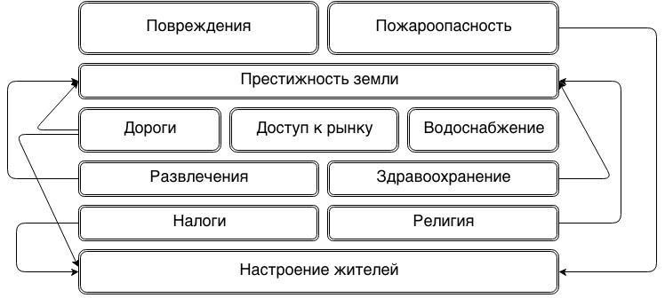
People live in houses; the number of people and the quality of housing change with each level, and each level has a set of parameters that, once met, promote it to the next. As I said, the base parameter is land prestige; another base parameter is food supply — in a small town it may be unnoticeable, but in big cities the distance to granaries and warehouses strongly affects where residential blocks land on the map. Since the market negatively affects the surrounding area and traders prioritize feeding the population, you often get a situation where, due to a food shortage, other goods start running short too — above all the most valuable ones (for house growth): pottery and furniture. Each next house level requires more expensive services and resources. We get a classic (human) pyramid of needs.
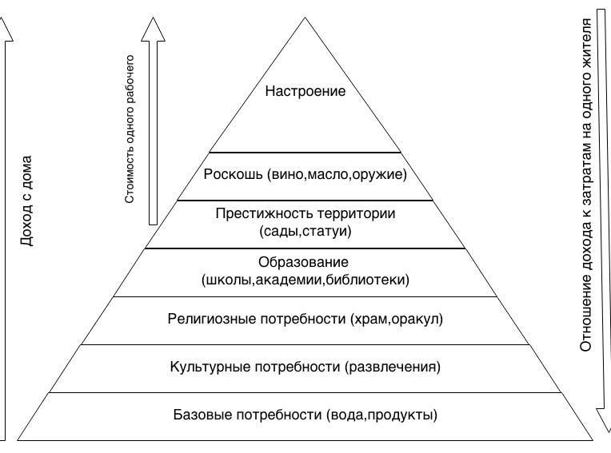
At a certain stage of development houses turn into villas and substantially improve the city's rating, but reduce the number of workers: patricians don't work, which in turn leads to a sharp drop in production and a mass exodus of residents — and if at some point you miss this “population swing,” it often leads to losing the mission. You can invite new settlers, but once shacks appear, the well-off residents start to flee and the prosperity rating falls.
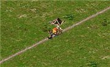
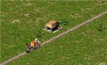
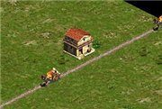
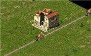
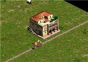
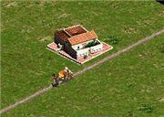
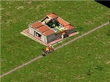
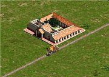
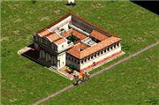
The base city layers can contain additional sub-layers responsible for a specific parameter or service. Health care, for example, can be split into general (doctors and baths) and specialized, which patricians need (the clinic) — but the latter also replaces the functions of the general ones: a clinic provides surgeon and doctor services, but its upkeep far exceeds that of a doctor's house. Entertainment is similar, except that entertainment buildings need “trainees”: a theatre needs actors, the colosseum gladiators and lions. A small detail, but this unobtrusive micro-management strongly affects city planning given the limited coverage radius of buildings.
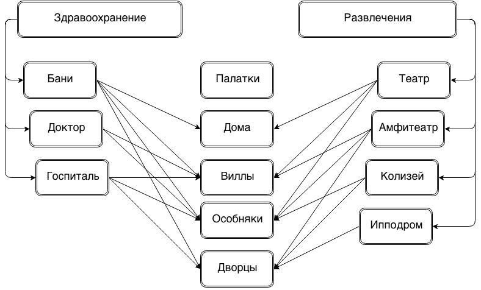
Having settled the components of “city life,” we can build a mathematical model of the city. Note that the original game uses a probabilistic-statistical model: at certain moments (game day, week, month and year) a snapshot of the city's parameters is taken, and from that data — together with previous states — the probability of an event is computed. A simplified description is shown below; red marks the negative influence of one object on another, green the positive. The upside of the statistical model is that computing an event's probability doesn't require the parameters of an individual object — we take the “average temperature across the hospital,” which greatly reduces the computational load (recall the game ran on machines with under 32 MB of RAM). Buildings do have their own characteristics, but in most cases they feed into averaged parameters rather than per-building computation.
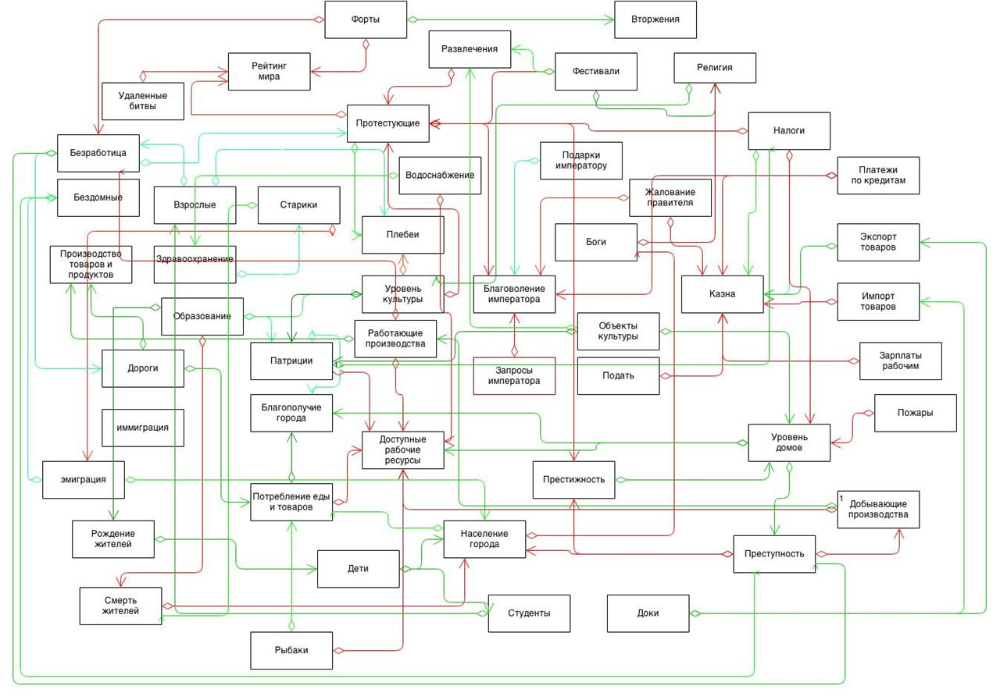
In the remake, a dynamic city model was planned from the start — similar to what you see in “Tropico,” where every game object has its own set of characteristics used to choose its behaviour at a given moment. The web of relationships is more complex here and depends on the specific object: a house's parameters depend on the number of residents, the number of workers in it, the availability of food and goods, and the money to buy them at the market. The picture shows a simplified model for computing a house's parameters.
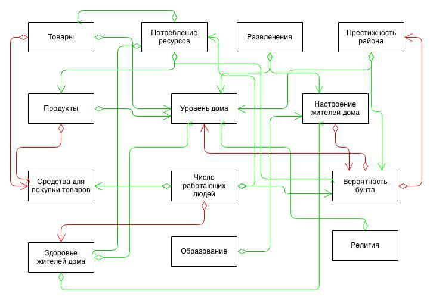
Because the probability computation moves from the city level down to the object level, interactions between objects need extra links — in the remake these are the “service providers” (carriers, the bath attendant, the market trader, the priest, schoolchildren and so on). The objects' behaviour model changes accordingly, with most interactions happening through an intermediary.
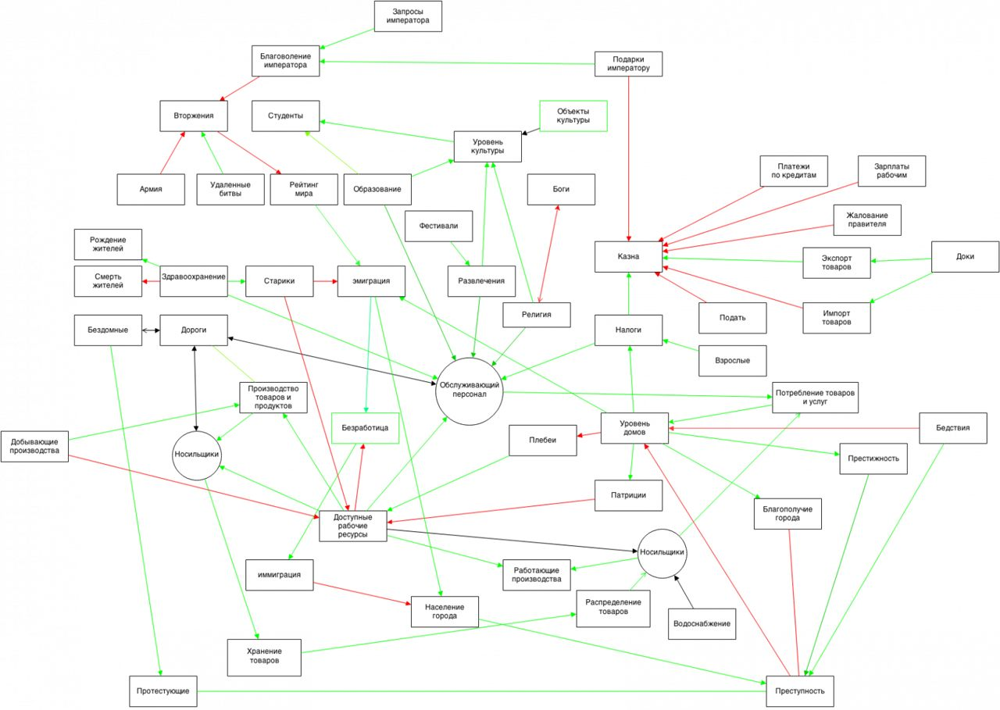
Using a dynamic model makes programming the logic of individual objects much harder, since you have to account for the type and effect of the source — but the upside is flexibility in tuning the behaviour of both the event source and its handler. Any dynamic simulation is meant to evaluate non-stationary processes and answer the question “what if?” — what if famine strikes during a heavy influx of settlers, how an epidemic, a fire or an earthquake will spread.
Differences from the original game
I've often been asked in private whether I'm making a clone of Caesar and where the decompiled sources went. The clone itself (the C code that resulted from reverse-engineering) is about 90% done; it builds and the first mission runs. The sources were removed from GitHub at the rights holder's request — that's the clone specifically, which sits in an even greyer legal area. As for the remake, CaesarIA is an independent open-source game, an attempt to revive a title with a 15-plus-year history from Impressions Games.
No, this isn't Caesar — I use ideas from the game, but all the code is written from scratch: logic, maps, pathfinding and other things you're used to seeing in old Caesar are done with a nod to it, but they're different. Yes, I use ripped resources for test builds; if the legality question bothers you, you're free to run the game against the original archives from a legitimately purchased copy.
After asking the community's opinion, I decided to try to legalize the remake in the way I found feasible at the time — raising funds through crowdfunding. I chose Indiegogo (and yes, I know many consider it a dump for dubious projects). Talking to artists on gamedev.ru and to designer friends, we settled on an average price for creating 3D models (and textures) of buildings and people: $6k for buildings (102 building models + animation) and $4k for people and environment. That would help avoid claims from rights holders and make it possible to distribute the game for desktops as well as Android and iOS tablets. By now I've done everything I planned for the game world by this autumn, but I'm just one person, and I hope the help of others will let the game find its own style. The project has reached a point where further progress is hard without new textures, buildings, sounds and other materials.
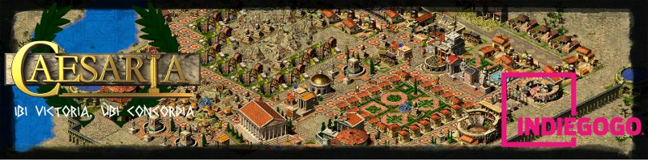
What's done so far. Simulation of the city: fires and building ageing; all buildings from the original are implemented (some need polish); all city layers from the original (education, health, sanitation, taxes, etc.); a tax-collection system based on forums. Gods and religion — gods can be angry or pleased; temple coverage is computed. Distribution of water, goods, food and services. Discontented citizens and rebels. A simple AI for commanding soldiers, friendly and enemy. Planning and holding festivals. Emperor's requests and trade between cities. Animals and fishing. Birth, ageing and death of citizens, with age groups. Dynamic path updates for objects and obstacle avoidance. Story missions from the original (up to the Thingis mission so far). Resource extraction and production chains.
← All articles